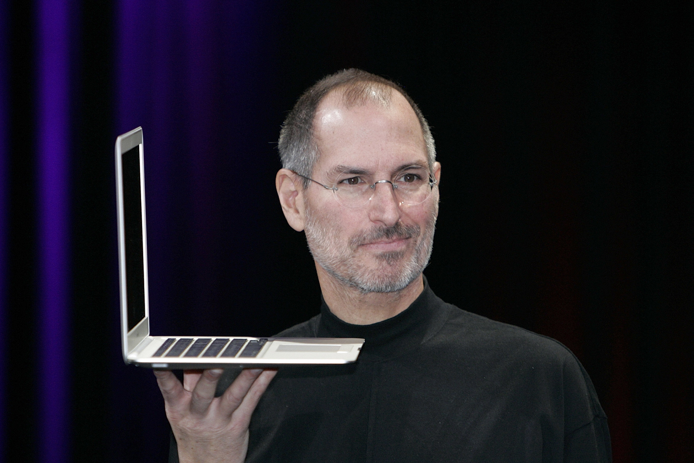
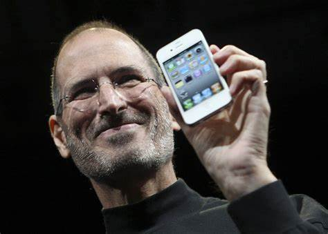

Achievements
1.Steve Jobs is an American inventor and entrepreneur, co-founder of Apple, and former CEO of Apple.
In 1974, he took a leave of absence from college for financial reasons to work for the Atari video game company. On April 1, 1976, Steve Jobs co-founded Apple with Steve Wozniak and Dragon Wayne, and launched Apple's first personal computer "Apple I" in the same year. In 1985, he left Apple due to a power struggle within the company and later founded Pixar Animation Studios. In 1997, Steve Jobs returned to Apple; The following year, the iMac was launched, leading Apple through a financial crisis.


2.Steve Jobs' Macintosh, iPhone and other products have ushered in the era of graphical interface PCs and mobile Internet, the latter has also changed the concept of smartphones, and the iPod has changed the way people listen to music. Jobs had a profound impact on industries such as personal computers, mobile phones, tablets, and digital publishing, as well as changes in communications, entertainment, and lifestyles around the world
Steve Jobs' inspirational success story - from dropping out of college to being the founder of Apple
Visit youtu.be
3.Electronics designed by Steve Jobs
10 most important
Visit pdf